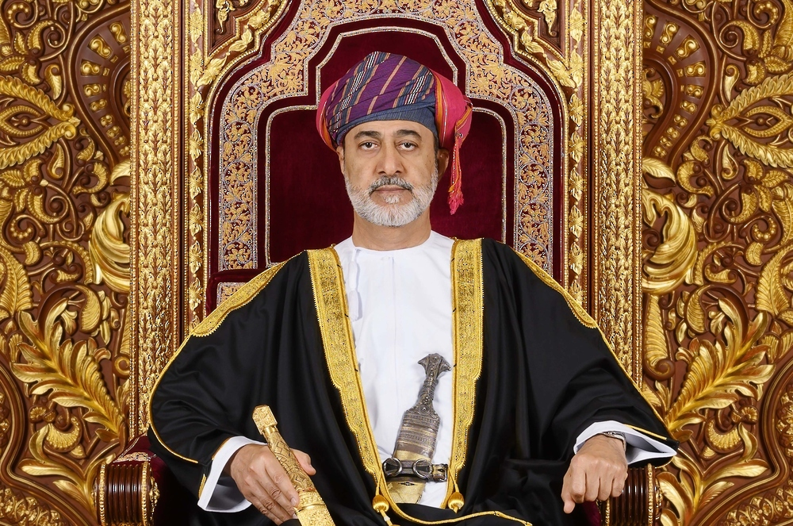
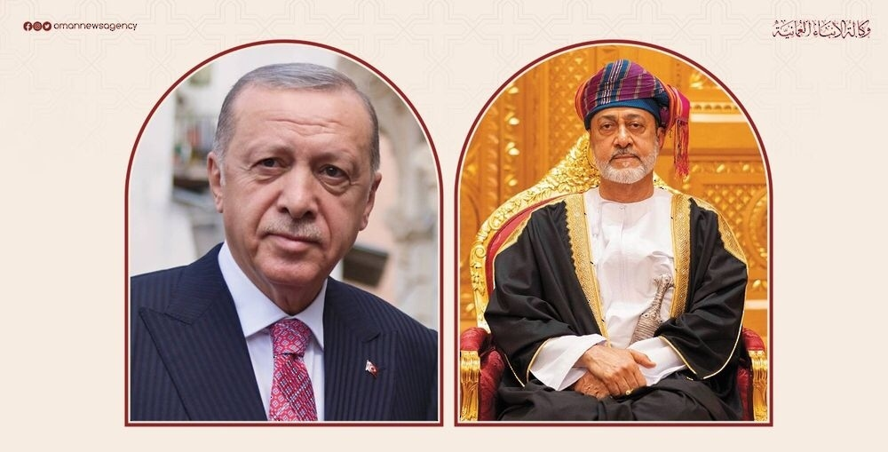
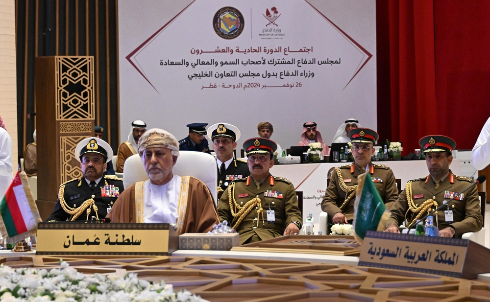

His Majesty the Sultan issues two royal decrees
His Majesty Sultan Haitham bin Tariq the Great, may God protect and
preserve him, today issued two supreme royal decrees.
Published 6:33 AM EST, Nov,9 2024

The Sultanate of Oman and Turkey...a fruitful path of bilateral
relations
The Sultanate of Oman and the Republic of Turkey look forward to
achieving more achievements in bilateral relations and trade,
investment, cultural and academic cooperation between the two
friendly countries after fifty years of diplomatic relations that
began on June 18, 1973 AD.
Published 6:33 AM EST, Mon November 25, 2024

The Sultanate of Oman participates in the meeting of the 21st
session of the Joint Defense Council of the Gulf Cooperation Council
countries in Qatar
Doha, November 26 / Al Omani / The Sultanate of Oman participated
today in the work of the twenty-first session of the Joint Defense
Council of Their Highnesses, Excellencies and Excellencies the
Defense Ministers of the Gulf Cooperation Council countries, which
was held in the sisterly State of Qatar. The Sultanate of Oman’s
delegation was headed by His Highness Sayyid Shihab bin Tariq Al
Said, Deputy Prime Minister for Defense Affairs.
Published 6:33 AM EST, Mon November 25, 2024